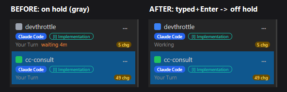

[Desktop] Typing into a held session should automatically take it off Hold
Branch: issue-470-clear-hold-on-input | Container: CcDirector.Core (Sessions/Session.cs) + CcDirector.Core.Tests
A session parked On Hold (Session.OnHold) now clears that flag automatically the
moment the user submits a real turn into it - mirroring the existing rule that promotes the session to
Working and clears IsBrandNew. Two code paths, both in Session.cs:
SendInput(byte[]) - inside the existing if (ContainsSubmit(data)) branch (CR 0x0D / LF 0x0A), set OnHold = false. A bare keystroke with no CR/LF is left untouched (composing, not a turn).SendTextAsync(string) - always a submitted turn, so set OnHold = false after the send.The clear belongs in Core so every input path (desktop terminal, Control API /prompt, Gateway-proxied)
benefits identically. No UI-project change was needed: the desktop SessionViewModel already subscribes to
OnHoldChanged and repaints the rail strip off OnHold. The OnHold setter already no-ops
and skips OnHoldChanged when the value is unchanged, so "exactly once" is satisfied for free and
setting it false when already false raises no spurious event.
| Criterion | Expected | Actual | Result |
|---|---|---|---|
SendTextAsync("hello") on a held session | OnHold == false after | Unit test SendTextAsync_OnHeldSession_ClearsOnHold passes | PASS |
SendInput with bytes containing CR/LF | OnHold == false after | Unit test SendInput_WithSubmitByte_ClearsOnHold passes | PASS |
SendInput with NO CR/LF (bare keystroke) | OnHold still true | Unit test SendInput_BareKeystroke_LeavesOnHold passes | PASS |
Clearing Hold raises OnHoldChanged once with false | exactly one event, value false | Unit test SendTextAsync_OnHeldSession_RaisesOnHoldChangedOnceWithFalse passes | PASS |
| Live: type+Enter into a held session removes Hold without clicking "Take Off Hold" | session visibly leaves On Hold | See live proof below: onHold True->False, rail strip gray->active | PASS |
Four new regression tests in SessionInteractiveTests.cs, run with dotnet test --no-build:
Passed CcDirector.Core.Tests.SessionInteractiveTests.SendInput_WithSubmitByte_ClearsOnHold Passed CcDirector.Core.Tests.SessionInteractiveTests.SendTextAsync_OnHeldSession_RaisesOnHoldChangedOnceWithFalse Passed CcDirector.Core.Tests.SessionInteractiveTests.SendTextAsync_OnHeldSession_ClearsOnHold Passed CcDirector.Core.Tests.SessionInteractiveTests.SendInput_BareKeystroke_LeavesOnHold
Full Core suite (no regressions):
Passed! - Failed: 0, Passed: 1969, Skipped: 2, Total: 1971
A real Claude Code session (devthrottle, backendType=ConPty - the production submit path) was
created, parked On Hold, then driven with a submitted prompt via POST /sessions/{id}/prompt with
appendEnter=true (which calls Session.SendTextAsync). No "Take Off Hold" was clicked.
POST /sessions/8cc40037.../hold {"onHold":true} -> GET onHold = true (parked)
POST /sessions/8cc40037.../prompt {"text":"say OK","appendEnter":true}
GET /sessions/8cc40037... -> GET onHold = false (cleared by the submit)
The submitted prompt actually executed in the session (terminal showed
Bash(echo "hello from issue 470 proof") -> Done), confirming the real SendTextAsync turn fired.
Before / After - desktop session rail (the held session is unselected so its status strip is visible)

BEFORE: devthrottle is On Hold - light-gray status dot, label greyed, receded below the active
cc-consult. AFTER: a single submitted prompt cleared Hold - devthrottle's dot returns to its
active color and the label un-greys, with nothing clicked but the prompt submission.
Individual crops: rail-before-onhold.png (held) and rail-after-offhold.png (off hold).
No drift. No architecture change (no new container or dependency) and no security-posture change - this is a
runtime UI-state flag, not a trust boundary, so architecture_manifest.yaml and
security_profile.yaml are unaffected.
{kind=link}
{kind=link}